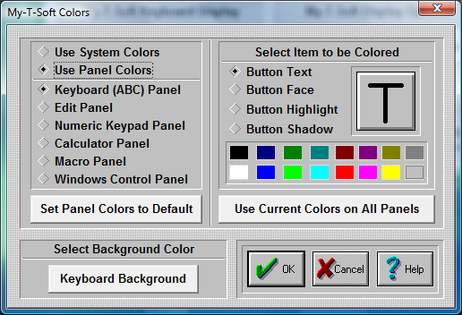

| My-T-Soft®: for Windows; Indestructible Keyboards and Indispensable Utilities; Version 1.80; User's Guide | ||
|---|---|---|
| Prev | Next | |

IMPORTANT NOTE - 3D Display, Themes affect Colors: As My-T-Soft has become more flexible, the original intent of these color options has diminished. Because the Button Text color is used, and the original display option is still available, the configuration options here remain intact. However, when the 3D display is enabled, or any other theme is selected, typically only the Button Text color will be reflected on the My-T-Soft display. For notes and access to more information on themes, refer to General Operation.
Select Color Source Select "Use System Colors" to use the Windows scheme (available in Display Properties, Appearance)
NOTE:
When System Colors are used in conjunction with 3D keys, only pure RGB colors are allowed. (RGB - Red, Green, Blue - 3 values between 0 and 255 indicating the amount of Red, Green, or Blue used to "build" a color - this is sometimes referred to as 24-bit color (3 x 1 byte <=> 3 x 8 bits = 24 bits) - pure RGB means a value of either 0 or 255 (no bits set, or all bits set)) Due to the shading & desire for a clean appearance, preservation of the system color is not possible (disable 3D keys to see actual system color). The following algorithm is used to create a "pure" RGB color: The system color is split into the 3 RGB components, and then the smallest value is subtracted away from all elements, leaving 0, 1, or 2 positive values - these then are used to determine use of a solid color (i.e. value of 255) or no color (i.e. a value of 0). This is used as the "background" of the shaded keys. In most cases, this is in the same color scheme as the System Colors. You may adjust the Windows Appearance, "Display 3D keys", or revert back to "Use Panel Colors" to review the various display options.
Select "Use Panel Colors" to use My-T-Soft Colors. My-T-Soft colors allows you to customize My-T-Soft by coloring each panel's keys and buttons.
Panel Colors
In order to color a My-T-Soft panel, do the following steps:
Select Panel to Color
Choose among the seven panels.
Click on the diamond-shaped Radio-Button of the panel you wish to color.
Select Item to be Colored
Click on the diamond-shaped Radio-Button of the part of the button you wish to color. You may also Click on the appropriate area of the oversized button on the right.
Click on a color that is provided below (16 colors) to select the color.
The item you have selected will change its color, and show you a preview of the in the oversized button window.
Repeat this process for all button parts you want to color.
Once you are finished coloring one panel, you either press OK Button to save, or select another panel to color. If you select another panel to be colored, the previous colored panel will change its colors immediately.
Use current Colors on all Panels
If you want your current selected colors to be the colors for all panels, press this button.
Set Panel Colors to Default
If you want to return one or all your panels to their default colors, press this button. To change one panel back to default colors, do the following steps:
Click on the diamond-shaped Radio-Button of the panel you wish to change.
Click on "Set Panel Colors to Default" button.
The colors will return to default.
To change all panels back to default colors, do the following steps:
After completing 1-3 above, press "Use current Colors on all Panels".
All panels will change to default colors.
Keyboard Background
To Select Keyboard Background Color
Use the Keyboard Background Button to change the color of the keyboard background & frame.